Wander
Travel Assistant
Overview
Wander is my first product design project and helped me learn the fundamentals of Figma as well as the process of designing a user-centered product. This case study is the result of completing my Google UX Design Certificate and is my most comprehensive project to date. Wander is a travel assistant app designed to simplify and enhance the trip-planning experience by focusing on collaboration and convenience. It offers a comprehensive, all-in-one platform where users can collaboratively organize every aspect of their trip, from destination discovery to itinerary management.
Problem Statement
Planning trips can be overwhelming, especially when you need to manage multiple elements such as flights, hotels, activities, and reservations. It's very easy to lose track of key details like confirmation numbers, travel times, and reservation dates when this information is stored across numerous apps, emails, and websites. Travelers often struggle with accessing the right details at the right time, leading to missed flights, potential holding up lines, and unnecessary stress.
How did Wander begin?
The Origin Story
During the summer of 2023, while completing my Google UX Design Certificate through Coursera, I was prompted to find a solution to a problem I had recently faced. As I had just traveled to Columbus, Ohio, for my summer internship, the only thing on my mind was how I had almost missed the flight from Maryland to get here.
It was my first summer away from home, and traveling alone, I started to feel overwhelmed by all the moving parts I had to manage, such as boarding details, ground transportation, and housing accommodations.
I finally made it to my gate but due to the slow update time of the airline's app for my boarding pass, I ended up at the wrong gate with only minutes to spare. I thought to myself, there has to be a better solution...
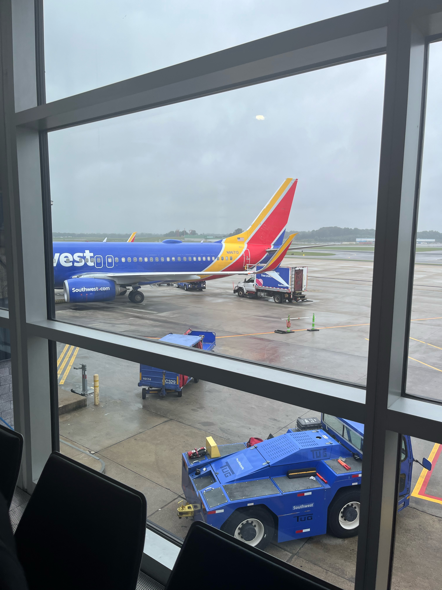
Expanding on the Pain Points
Further Research
Losing information
When traveling, users need to keep track of many different booking confirmations that are sent through various sources, which can cause information to get lost.
Navigating a new location
When traveling someplace new, users may have to make an adjustment in their clothing choices, cuisine, and navigation. There may be a sense of confusion due to the new climate that they are in.
Lack of real-time updates and support
When traveling, unexpected situations like flight delays or cancellations can leave travelers feeling uncertain on what to do next.
Misplacing or forgetting items
In all the rush of packing, booking trips and reservations...it is common for items to get forgotten or misplaced. Having a packing list or reminder system can be useful.
Crafting Inclusive User Personas
User Research
Understanding Wander's Target Users Through Market Analysis
By analyzing the target user groups of similar travel applications such as Airbnb and Southwest, I identified the needs of the users who would enjoy Wander and qualities of the primary user groups.
Age
Users age 16+
Traits
Expectations
Users of Wander expect an easy-to-use platform that helps them organize travel details in one place and save time during the planning process.
Meet Temitope Abimbola
Tech Consultant, IBM
"I'm always on the go. I love traveling so much I made it my job. I can't say that I love the planning part as much."
Demographics
Age: 23
Hometown: Plano, Texas
Education: B.S. in Computer Science
Family: Single, lives alone
Goals
Frustrations
Considerations
Temi has ADHD, which often makes the process of planning travel particularly overwhelming and stressful for her, as it can be difficult to manage multiple details, stay organized, and maintain focus throughout the planning stages.
Meet Ronan Walsh
Food Blogger, Freelance
"I'm really big on family. My family and I visit home three times a year. Something just also seems to go wrong with our flight info."
Demographics
Age: 31
Hometown: Atlanta, Georgia
Education: A.S in Marketing
Family: Married with two kids
Goals
Frustrations
Considerations
Ronan often gets frustrated when calling hotels and airports because representatives mishear him due to his heavier accent.
User Journey Map
Traveling to Your Dream Destination
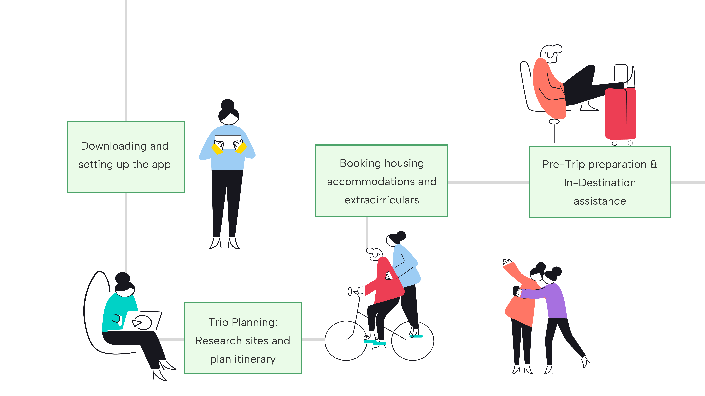
The Solution
Addressing the Pain Points and User Needs
How does 'Wander' improve the travel experience?
To address the challenges of trip planning and information management, I propose a personalized travel assistant app that centralizes all travel-related details in one platform. This app will seamlessly integrate bookings from multiple sources, including flights, accommodations, car rentals, activities, and dining reservations, providing a unified itinerary that is easily accessible and regularly updated in real time.
"Shared Itinerary Hub"
A dynamic itinerary tool that updates in real time, allowing friends to collaborate on travel plans, keeping everyone informed.
"Travel Overview Dashboard"
A comprehensive dashboard that combines flight details, location-based activity recommendations, real-time weather updates, and more.
"Your Wander Goals"
A personalized welcome series that helps users share what they want to achieve within the app, so 'Wander' can tailor features to their needs.
Digital Wireframe
Welcome Page Series
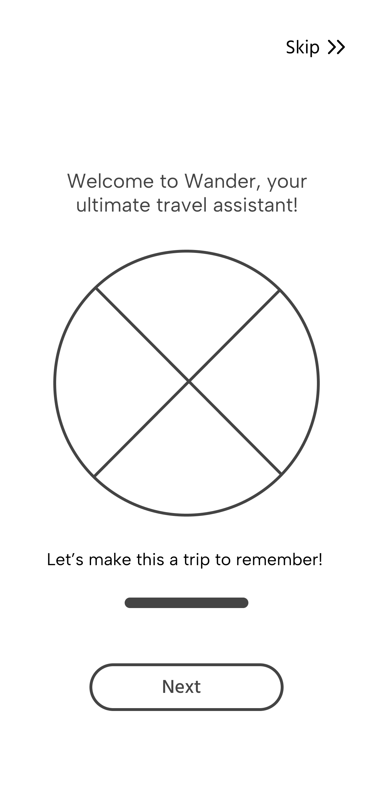
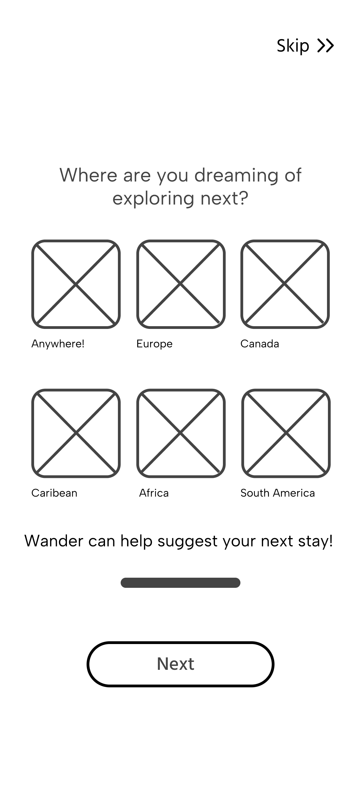
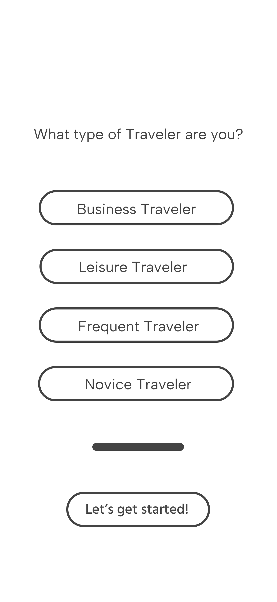
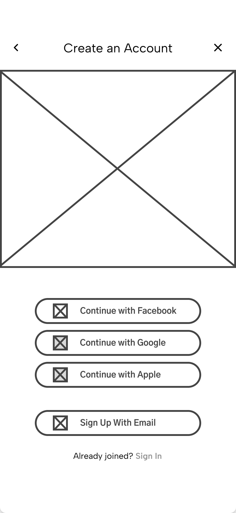
Welcome Page
The 'Welcome Page' is the user's first interaction with the app. Its purpose is to create a strong, visually appealing first impression that communicates the personalized nature of the brand.
Dream Destination
The 'Dream Destination' page allows users to explore various travel options visually and interactively. Its purpose is to get users excited by showcasing all the potential travel destinations.
Travel Frequency
The 'Travel Frequency' page informs us how often a user travels, which is important because it allows us to understand their familiarity with the overall travel experience.
Sign In / Log In
The 'Sign In / Log In' page allows new and returning users to securely access their accounts and continue planning or viewing trips.
High Fidelity Prototype
Welcome Page Series
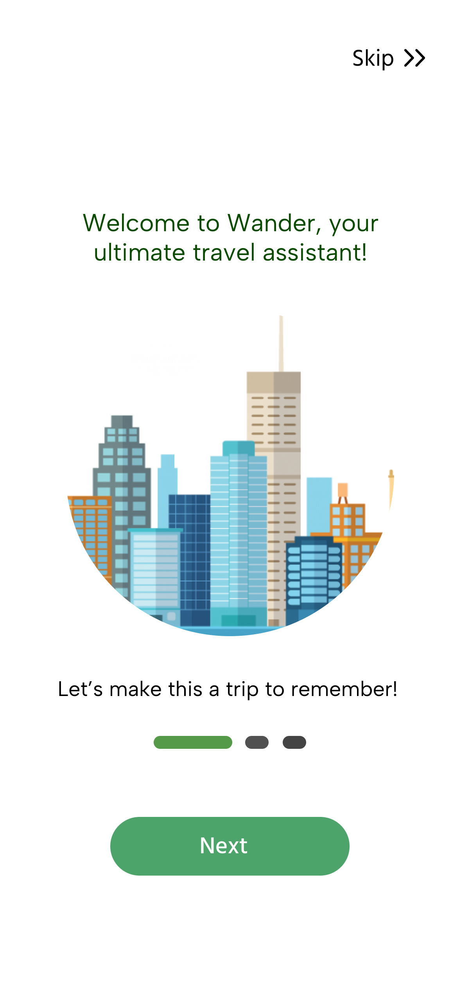
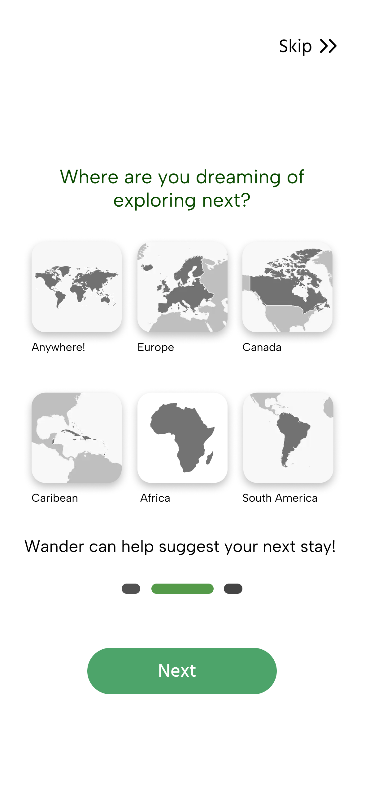
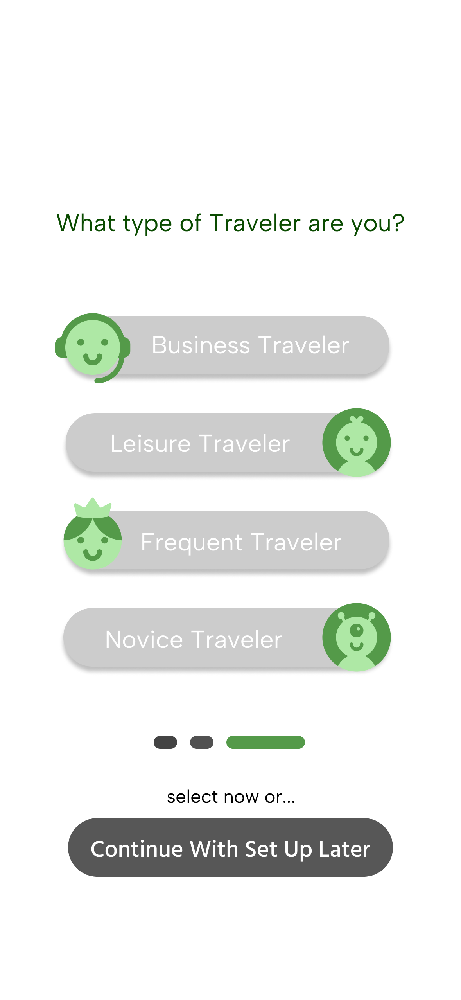
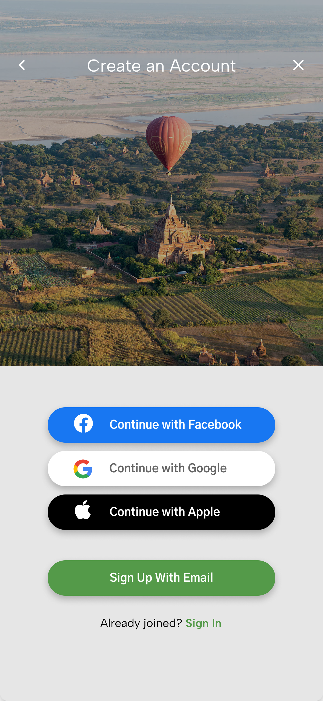
High Fidelity Prototype Cont.
Home Page Series
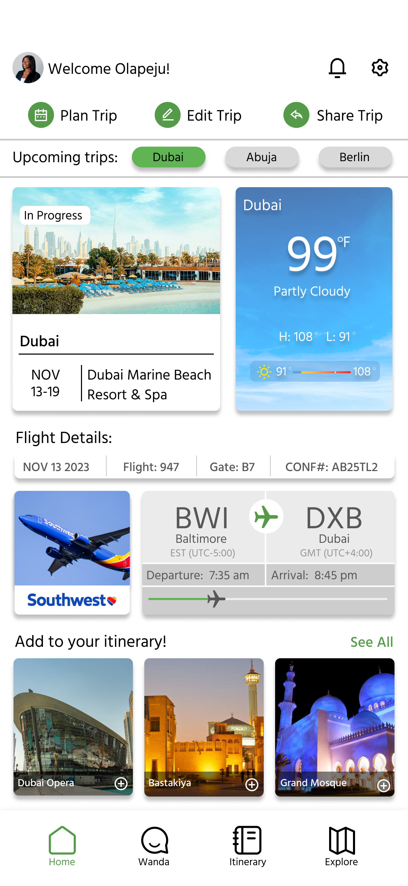
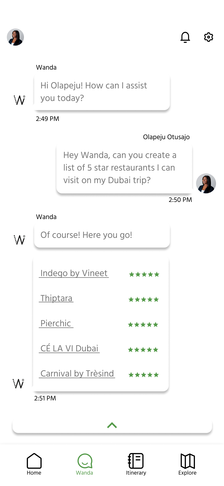
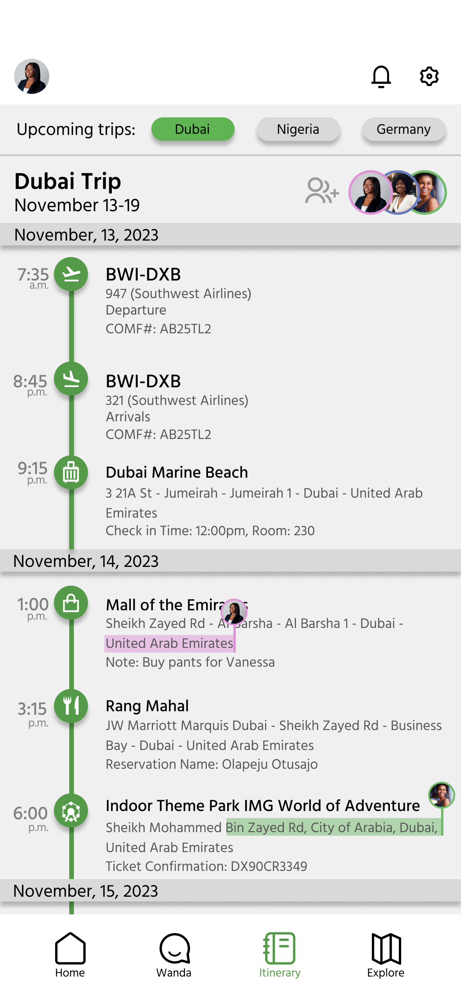
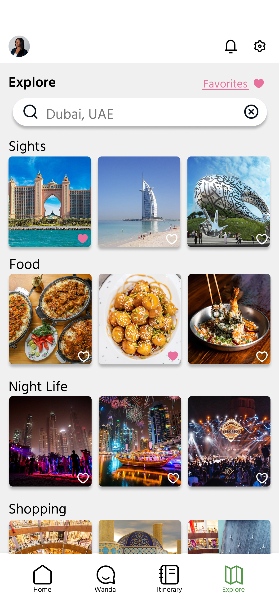
Final Prototype
24 Interactive Pages
Solution Overview
The Wander prototype allows users to reach their travel goals ranging from checking their boarding pass, adding activities to their itinerary, and collaborating with friends or family. Additional detailed pages have been added to allow for error correction and a seamless interactive experience.
Skills Used
More Projects
Check out my other work